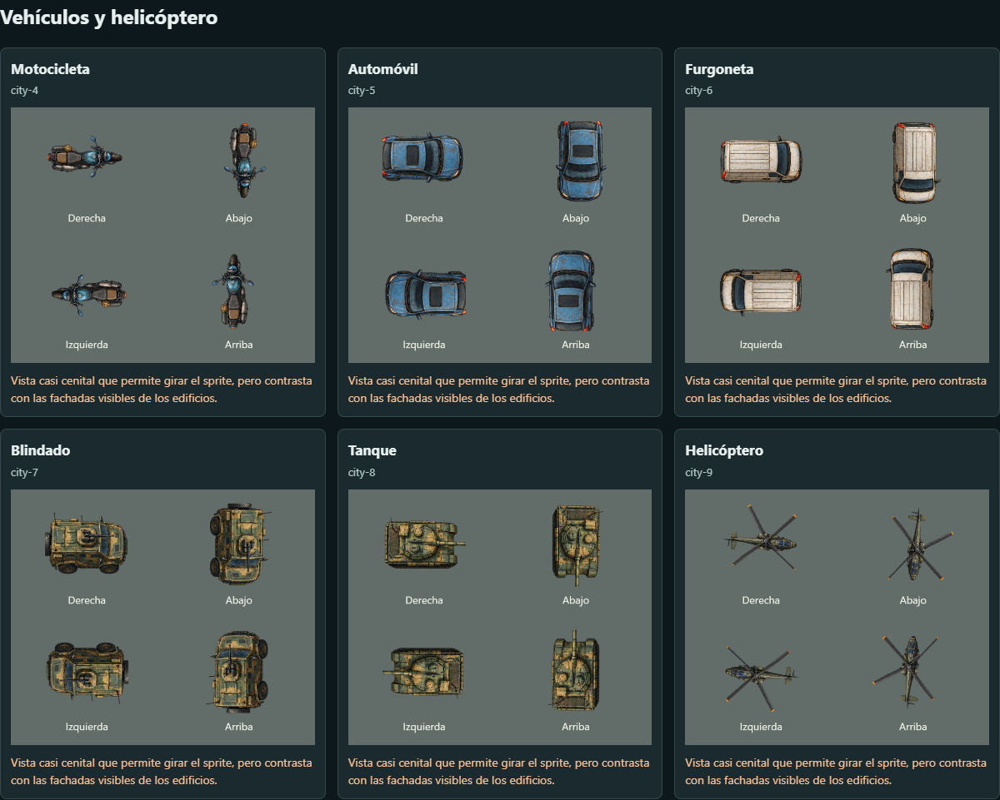
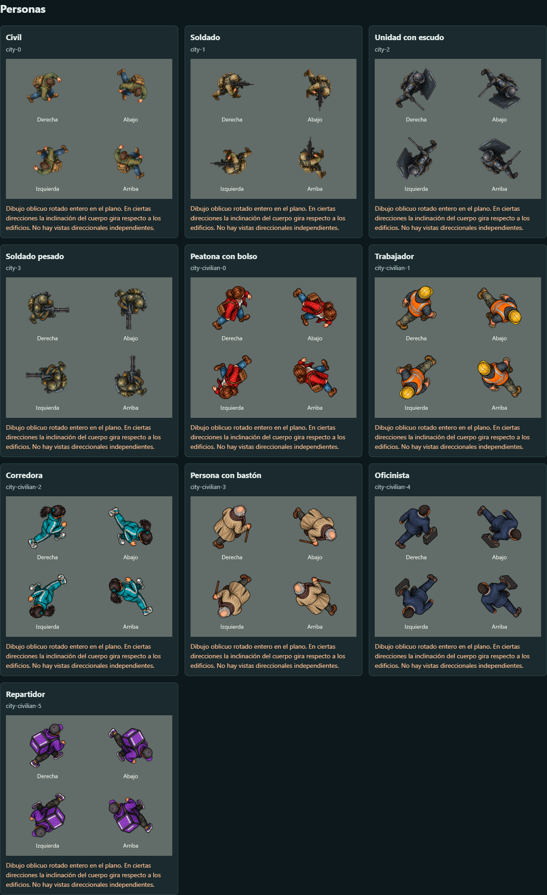

Una cámara para toda la ciudad
Objetos alineados con la arquitectura. Personas y vehículos tienen vistas de frente, espalda y ambos lados: sus cuerpos ya no giran como una lámina. Esta galería utiliza el mismo renderer que la partida. Las imágenes están ampliadas para revisar la perspectiva; no representan sus tamaños relativos.
Arquitectura · referencia de cámara
Vehículos · cuatro vistas
Ver la revisión anterior

